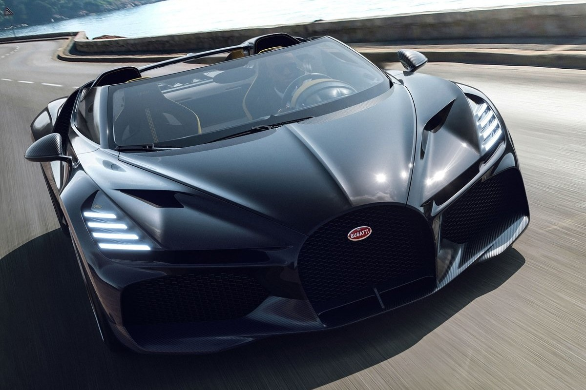
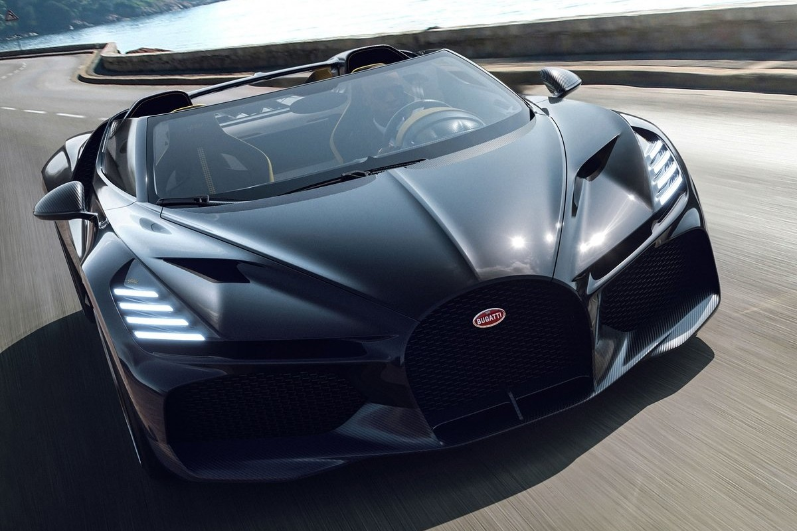
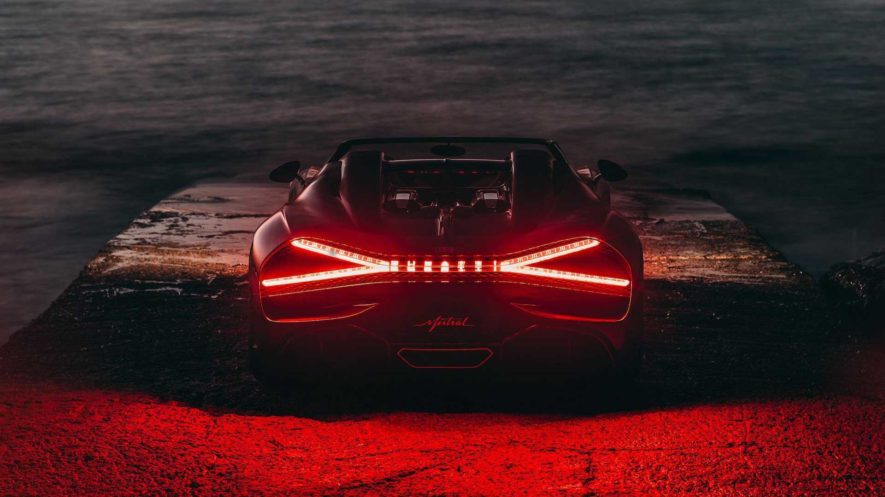

O Último Roadster com o Icônico Motor W16
O Bugatti W16 Mistral representa o auge da engenharia automotiva e do luxo. Este é o último modelo da marca a utilizar o lendário motor W16 de 8 litros, prometendo um desempenho inigualável, com foco tanto na velocidade quanto na experiência de condução de alto nível. Com sua produção limitada a 99 unidades, cada uma será personalizada de acordo com as exigências do comprador.
Galeria
 

Detalhes Técnicos
- Motor: W16 8.0 litros com quatro turbos
- Potência: 1.578 cavalos de potência
- Velocidade Máxima: Mais de 420 km/h
- Chassi: Monocoque em fibra de carbono
- Aerodinâmica: Design otimizado para alta performance
Futuro
Uma das grandes expectativas é a verificação da velocidade máxima do Mistral, que deverá ultrapassar os 420 km/h. Isso representará um desafio logístico, pois são poucos os circuitos no mundo que oferecem condições seguras para testes nessas velocidades extremas. No entanto, Emilio Scervo, diretor técnico da Bugatti Rimac, expressou confiança de que o veículo atingirá facilmente essa marca assim que for testado no local adequado. O desenvolvimento do Mistral foi projetado meticulosamente para combinar aerodinâmica avançada com o máximo de luxo e desempenho. O monocoque foi reprojetado para oferecer maior rigidez e segurança, essenciais para suportar a incrível potência gerada pelo motor W16, que já fez história em modelos como o Chiron e o Veyron. Além disso, o sistema de transmissão e o conjunto motriz foram submetidos a testes intensivos para garantir que o veículo entregue a aceleração e o desempenho esperados. A produção do Bugatti Mistral está programada para começar ainda em 2024, no famoso Atelier da Bugatti em Molsheim. Com um preço que deve ultrapassar os €5 milhões, este veículo será limitado a apenas 99 unidades, cada uma delas feita sob medida para seus proprietários. Além de ser um dos carros mais rápidos do mundo, o Mistral promete ser um marco na história da Bugatti, fechando a era do motor W16 com chave de ouro. Com o início da produção se aproximando, o Bugatti W16 Mistral não só promete ser o roadster mais rápido e luxuoso já construído, mas também simboliza o fim de uma era para a Bugatti, que deve evoluir para novas formas de propulsão nos próximos anos.
